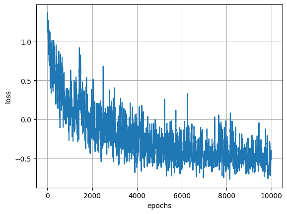

import numpy as np
import torch
import torch.nn as nn
import matplotlib.pyplot as plt
from torch.distributions import Normal
import torch.optim as optim
np.random.seed(42)Learning Functions with Conditional Neural Processes
Neural Process
Tutorial
Machine Learning
Introduction
Meta learning models help us ‘learn how to learn’. They are models that can learn new tasks quickly from just a handful of examples. In this blog, we explore a simple but powerful framework for this: the Conditional Neural Process (CNP).
Imports
device = torch.device("cuda" if torch.cuda.is_available() else "cpu")Creating training data
Instead of training on a fixed dataset, our model learns by seeing functions. In every training step, we generate a new sine wave of the form \(ùë¶=ùëésin(ùë•)\) where the amplitude \(ùëé\) is randomly chosen from a uniform distribution in (-2,2). Then we randomly sample points from this function to be context points and target points.
def sine(x, a):
return a * np.sin(x)
def create_training_data(func, num_points=20, num_context=10):
a = np.random.uniform(-2,2) # randomly sample a
x_all = np.random.uniform(-np.pi, np.pi, num_points)
y_all = func(x_all, a)
context_indices = np.random.choice(num_points, num_context, replace=False)
x_context = x_all[context_indices]
y_context = y_all[context_indices]
# The rest are target points
target_indices = np.setdiff1d(np.arange(num_points), context_indices)
x_target = x_all[target_indices]
y_target = y_all[target_indices]
# Convert to PyTorch tensors
x_context = torch.tensor(x_context, dtype=torch.float32).unsqueeze(-1)
y_context = torch.tensor(y_context, dtype=torch.float32).unsqueeze(-1)
x_target = torch.tensor(x_target, dtype=torch.float32).unsqueeze(-1)
y_target = torch.tensor(y_target, dtype=torch.float32).unsqueeze(-1)
return x_context, y_context, x_target, y_targetLets visualize some of these functions.
x = np.linspace(-np.pi, np.pi, 200)
plt.figure(figsize=(8, 5))
for i in range(5):
a = np.random.uniform(-2, 2)
y = sine(x, a)
plt.plot(x, y, label=f"a={a:.2f}")
plt.xlabel("x")
plt.ylabel("y")
plt.legend()
plt.grid(True)
plt.show()
The Model
A CNP has two main components:
- Encoder : A neural network that takes in context pair \((x_i , y_i)\) and transforms them into representation vector \(r_i\). To combine information from all context points, we take an average over all points and get a vector \(r\) of same dimension as each vector \(r_i\).
- Decoder: A neural network that uses the representation \(r\) to make predictions at target point \(x_t\). We pass in concatenated \([r,x_t]\) as the input and the output is the predicted mean and variance of \(y_t\). We normalize the value of sigma to make sure it is positive.
class Encoder(nn.Module):
def __init__(self, output_dim):
super().__init__()
self.fc1 = nn.Linear(2, 128) # x_context and y_context
self.fc2 = nn.Linear(128, 128)
self.fc3 = nn.Linear(128, output_dim)
self.relu = nn.ReLU()
def forward(self, x):
x = self.relu(self.fc1(x))
x = self.relu(self.fc2(x))
x = self.fc3(x)
return x
class Decoder(nn.Module):
def __init__(self,r_dim):
super().__init__()
self.fc1 = nn.Linear(r_dim+1, 128) # r vector and x_target concatenated
self.fc2 = nn.Linear(128, 2)
self.relu = nn.ReLU()
def forward(self, x):
x = self.relu(self.fc1(x))
x = self.fc2(x)
mu,sigma = x.chunk(2, dim=-1)
return mu, sigma
class ConditionalNeuralProcess(nn.Module):
def __init__(self,r_dim):
super().__init__()
self.encoder = Encoder(r_dim)
self.decoder = Decoder(r_dim)
def forward(self,context_x,context_y,target_x):
context_point = torch.cat([context_x, context_y], dim=-1)
r_i = self.encoder(context_point)
r =torch.mean(r_i,dim=0)
num_target = target_x.shape[0]
r_expanded = r.expand(num_target, -1)
decoder_input = torch.cat([r_expanded, target_x], dim=-1)
mu, sigma = self.decoder(decoder_input)
sigma = 0.1 + 0.9 * torch.nn.functional.softplus(sigma)
return mu, sigma
r_dim = 128
model = ConditionalNeuralProcess(r_dim)
The code below will help us visualize the model inputs and predictions.
def visualize_cnp_predictions(model, context_x, context_y, target_x, target_y):
model.eval()
with torch.no_grad():
# Generate a dense range of x-values to plot the learned function smoothly
x_plot = torch.linspace(target_x.min().item(), target_x.max().item(), 500).unsqueeze(-1)
mu_pred, sigma_pred = model(context_x, context_y, x_plot)
context_x_np = context_x.numpy()
context_y_np = context_y.numpy()
target_x_np = target_x.numpy()
target_y_np = target_y.numpy()
x_plot_np = x_plot.numpy()
mu_pred_np = mu_pred.numpy()
sigma_pred_np = sigma_pred.numpy()
plt.figure(figsize=(10, 6))
plt.scatter(context_x_np, context_y_np, c='red', label='Context Points', marker='o', s=100)
plt.scatter(target_x_np, target_y_np, c='blue', label='True Target Points', marker='x', s=100)
plt.plot(x_plot_np, mu_pred_np, color='green', linewidth=2, label='Predicted Mean')
plt.fill_between(x_plot_np.squeeze(),
(mu_pred_np - 2 * sigma_pred_np).squeeze(),
(mu_pred_np + 2 * sigma_pred_np).squeeze(),
color='green', alpha=0.2, label='2σ Uncertainty')
plt.title('Conditional Neural Process Predictions', fontsize=16)
plt.xlabel('X', fontsize=12)
plt.ylabel('Y', fontsize=12)
plt.legend()
plt.grid(True)
plt.show()What does the model predict before training?
# for i in range(5):
x_context, y_context, x_target, y_target = create_training_data(sine)
visualize_cnp_predictions(model,x_context,y_context,x_target,y_target)
Training
The model is trained by minimizing the negative log-likelihood (NLL) — encouraging the predicted distributions to assign high probability to the true target values.
r_dim = 128
model = ConditionalNeuralProcess(r_dim)
def NLL(mu_pred, sigma_pred, target_y):
# Create a normal distribution with the predicted mean and standard deviation
dist = Normal(mu_pred, sigma_pred)
log_prob = dist.log_prob(target_y)
loss = -torch.mean(log_prob)
return loss
optimizer = optim.Adam(model.parameters(), lr=1e-3)
num_epochs = 2000
for epoch in range(num_epochs):
x_context, y_context, x_target, y_target = create_training_data(sine,60,10)
optimizer.zero_grad()
mu_pred, sigma_pred = model(x_context, y_context, x_target)
loss = NLL(mu_pred, sigma_pred, y_target)
loss.backward()
optimizer.step()
if (epoch) % 100 == 0:
visualize_cnp_predictions(model,x_context,y_context,x_target,y_target)
print(f"Epoch {epoch}/{num_epochs}, Loss: {loss.item()}")
Epoch 0/2000, Loss: 1.2191544771194458
Epoch 100/2000, Loss: 1.1903642416000366
Epoch 200/2000, Loss: 0.7007207274436951
Epoch 300/2000, Loss: 1.5462225675582886
Epoch 400/2000, Loss: 0.7815963625907898
Epoch 500/2000, Loss: 0.7714107632637024
Epoch 600/2000, Loss: 0.6355094313621521
Epoch 700/2000, Loss: 0.5624711513519287
Epoch 800/2000, Loss: 0.6095244884490967
Epoch 900/2000, Loss: -0.9688698649406433
Epoch 1000/2000, Loss: -0.43185102939605713
Epoch 1100/2000, Loss: 0.3317843973636627
Epoch 1200/2000, Loss: 1.0584346055984497
Epoch 1300/2000, Loss: -0.5391824841499329
Epoch 1400/2000, Loss: 0.4801075756549835
Epoch 1500/2000, Loss: 0.6704821586608887
Epoch 1600/2000, Loss: -0.40198639035224915
Epoch 1700/2000, Loss: -0.09618251770734787
Epoch 1800/2000, Loss: -0.30808529257774353
Epoch 1900/2000, Loss: 0.45030006766319275After training, the model is predicting a good approximation of our function.
x_context, y_context, x_target, y_target = create_training_data(sine,20,10)
visualize_cnp_predictions(model,x_context,y_context,x_target,y_target)
I would say that CNPs are a rather simple approximation to neural processes. Their aggregator function being simply a mean may lose information and they do not model uncertainty as well, being a deterministic model.
Credits to https://kasparmartens.rbind.io/post/np/ and Deepmind for an excellent tutorial on this topic.